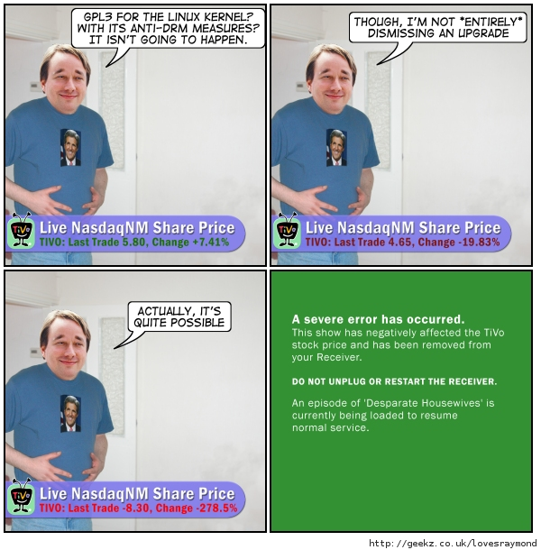

Sobre el nuevo borrador de GPL v3
Ayer se publicó el tercer borrador de la licencia GPL3:
Ha habido muchos juicios a través de los años que han añadido interpretación a las leyes de las cuales depende la GPL2. A medida que la ley cambia, la GPL debe cambiar para mantenerse a la misma altura, o se volverá obsoleta.
Este post es algo largo, si no tenés mucho tiempo para leerlo te recomiendo que salntes al final, a la sección: Palabras de Linus.
Despejando el FUD contra la GPL3
Por Bruce Perens (original - traducción)
Se ha hablado mucho de la 3ra versión de la GPL: que si va demasiado lejos como para ser admisible en los negocios, que si los desarrolladores del kernel Linux algún día se cambiarán a ésta, que si nuestra comunidad se dividirá o se producirá malestar en ella debido a esto.
Muchos de esos comentarios están basados en un pobre entendimiento de los términos de la GPL3 y, con el inminente lanzamiento de la nueva licencia, es tiempo de aclararlos.
Los confundidos opositores de la GPL3 dicen que ésta no permitirá que el Linux kernel sea usado en sistemas que implementen DRM, y que la GPL3 forzará a los fabricantes a "entregar sus llaves". Si Linus Torvalds y los desarrolladores del kernel todavía creen esto, están equivocados.
El propósito de la GPL3 (y de muchas otras licencias de software libre) es el de dar el derecho de modificar cualquier software cubierto por esta licencia. La GPL versión 3 se esmera más que otras licencias para asegurarse que este derecho funcione con sistemas embebidos. Lo que esencialmente hace es intercambiar a los creadores esos sistemas el derecho de manipular sus recursos en nuestro gran software GPL a cambio del derecho del consumidor de hacer que ese hardware corra programas nuevos e innovadores que no fueron previstos por su fabricante, o sea, que sí se puedan instalar modificaciones.
La GPL3 no prohíbe el DRM y no requiere que el DRM sea poco seguro o poco confiable. Lo que sí requiere es que el DRM no rompa el software GPL o lo asegure contra modificaciones, y debe continuar funcionando si el software GPL es modificado.
Un sistema con software GPL3 y DRM deberá permitir al software GPL, el sistema operativo kernel por ejemplo, ser reemplazado. Deberá permitir que el sistema arranque luego de dicho cambio y tendrá que seguir permitiendo al sistema correr multimedia o hacer cualquier otra cosa que el DRM hiciese antes del cambio. No deberá proveer acceso al flujo de datos desencriptado y no habría necesidad de producir claves de encriptación mientras el DRM esté implementado para cumplir con los requerimientos de la GPL3.
Si el Linux kernel estuviera bajo la licencia GPL3, el fabricante estaría prohibido de usar DRM para sellar el kernel de tal forma que fuese imposible modificarlo, como hacen los Tivo. Pero eso no significa que no pueda tener DRM a prueba de balas para restringir multimedia usando Linux y GPL3 y eso no podría impedir a Tivo de usar nuevos kernels. Sólo dice donde ése DRM debe ser colocado: en cualquier lugar que pueda existir sin que le quite el derecho al usuario de cambiar el software GPL.
Si la GPL3 es aplicado al kernel de un sistema operativo, hay cuatro lugares en donde se puede colocar el DRM en ese sistema y seguir cumpliendo con la GPL3. Y esos lugares son los mejores, los más seguros y más confiables en donde poner el DRM desde un punto de vista técnico, independientemente de la licencia:
-
En el hardware.- Este sería usualmente un circuito integrado de aplicación específica o una unidad (arreglo) lógica programable que interprete flujos encriptados en aparatos de audio o video.
-
En un coprocesador.- La mayoría de los teléfonos celulares que ofrecen funciones PDA (y PDAs que contienen dispositivos wireless) tienen dos o más CPUs, generalmente un ARM9 corriendo en la interfase del usuario y las aplicaciones, y un ARM7 que ejecuta la capa de enlace de datos wireless o el conjunto de el GSM. Usted puede poner el DRM en el procesador que no está corriendo el kernel y luego el componente GPL sólo se comunica con un bien definido enlace interprocesador al CPU externo que ejecuta el DRM. Las obligaciones de la GPL no cruzan ese enlace.
-
En un kernel bajo el kernel.- Microsoft XP y Vista han usado esta arquitectura: el núcleo del sistema DRM está en un microkernel llamado "nib" que está bajo un verdadero kernel, y hospeda al verdadero kernel como el kernel hospedaría a una aplicación en modo usuario.
-
En un programa en modo usuario.- Las obligaciones de la GPL en la licencia del kernel no se transmiten a través de la interfaz de llamada al sistema desde el kernel a una aplicación hospedada por ese kernel.
Muchos han interpretado que la GPL2 siempre hizo la misma restricción en el DRM que ha sido planteada más explícitamente en la GPL3. Siempre he aconsejado a mis clientes de consultoría estratégica que hagan sus planes técnicos asumiendo que esto es así, en lugar de decidirlo en una demanda que podría salir cara. Los 4 lugares para el DRM que mencioné también se aplican para la GPL2.
Otra objeción que también se escucha frecuentemente a la GPL3 es que la "GPL2 estaba lo suficientemente bien". Pero la GPL nunca ha sido independiente, siempre ha dependido de la interpretación local de los derechos de autor y de otras leyes para que le den fuerza, y esas cosas cambian con el tiempo.
Cuando la GPL fue escrita no había web, la música salía de tocadiscos, los videos en videocasetes y en lugar del DRM, sólo había una "rudimentaria protección anticopia" de software. La aparición de microprocesadores, software, la web y medios digitales trajeron grandes cambios en la ley con muchos cambios en los derechos de autor, patentes, la naturaleza del consentimiento, contratos, licencias sin lectura previa y permisos de derechos de autor. Ha habido muchos juicios a través de los años que han añadido interpretación a las leyes de las cuales depende la GPL2. A medida que la ley cambia, la GPL debe cambiar para mantenerse a la misma altura, o se volverá obsoleta.
En el acuerdo Novell-Microsoft una laguna jurídica fue creada por los abogados de Microsoft y Novell, una tan nueva para nosotros que los dos primeros bosquejos de GPL3 no contenía las precauciones del caso para contrarrestarla. Esta experiencia muestra que GPL debe seguir creciente para poder mantenerse a flote. El estancarse en una versión con el tiempo sólo resultaría en estropear sus protecciones.
¿Y qué hay con respecto a Novell-Microsoft? ¿Habrá otra precaución para invalidar de alguna forma a la GPL3? ¿Cómo funcionará? Richard Stallman anunció el lunes 19 de marzo que la GPL3 contendrá precauciones que invalidarían el acuerdo Novell-Microsoft. Funciona así: si alguna entidad que distribuye el software dispone proteger a un grupo particular de patentes que se refieran a ese software, debe protegerlos a todos. Esto arregla el vacío legal del que se había aprovechado el acuerdo Novell-Microsoft sin ser discriminatorio o injusto.
¿Qué significa esto para Novell? Eso no evitará que ellos usen el software GPL2 existente en sus versiones actuales. Pero podrían congelarse en ambar como un ejemplo del estado de los programas a comienzos del 2007, mientras que el resto de las distribuciones de la comunidad de Software Libre y Linux avanzan al futuro. Torvalds se resiste a cambiar la licencia de Linux enseguida, pero programas críticos en sistemas Novell son de propiedad directa de la FSF: GLibC, la librería fundamental del que todo programa depende, el compilador C y otros componentes clave.
Proyectos que no son propiedad de la FSF también se cambiarán: la motivación de los programadores Open Source (código abierto) de publicar nuevo código al público es en parte dependiente de la ejecutabilidad de los términos de GPL de compartir en partes iguales, y la GPL3 ofrecerá la más continua ejecutabilidad.
La mayor parte de los proyectos de código abierto han escogido la GPL, y el paradigma de compartir en partes iguales, en lugar del sabor de la licencia BSD/Apache que es un regalo incondicional. Muchos desarrolladores simplemente dejarían de crear si no pudiesen compartir porque sentirían como si las corporaciones y las distribuciones de Linux estuvieran aprovechándose de ellos, como si fuesen empleados sin sueldos. La mayor parte de aquellos que se sientan así mudarán sus proyectos a la GPL3.
La GPL es también una muy buena licencia para negocios como MySQL, porque facilita el paradigma de la doble licencia, en donde un cliente puede pagar al creador de software en lugar de compartir cambios que el cliente le hace al software. Esté seguro que esas compañías y proyectos se cambiarán a la GPL3 una vez que hayan estudiado la nueva versión.
¿Pero cómo puede el proyecto del kernel Linux, con sus miles de desarrolladores, cambiar su licencia? Ni siquiera podemos llegar a todos ellos, algunos están muertos y sus estados no diferencian entre una licencia de software y una de conducir. Pero cambiar la licencia es más fácil de lo que la gente piensa.
Primero, no es un cambio fundamental: la intención de la GPL3 es la misma que la de la GPL2, el cambio está en la implementación. Dado esto, lo que se necesitaría para tal cambio seria que Torvalds publicara sus intenciones de comenzar a sacar lanzamientos con la nueva licencia, algo así como un aviso legal. Un grupo de gente objetaría y tendrían derecho a exigir que sus contribuciones fueran removidas del nuevo lanzamiento. El equipo de kernel nunca se ha resistido a reemplazar código cuando ha sido necesario, y nunca se ha tardado en hacerlo sin importar cuan grande fuera la parte a ser reemplazada. Sólo vean el reemplazo de Bitkeeper por "git", una tarea muy grande para el equipo de reescritura, y aún así estuvo funcionando en 5 semanas. Así que, el código que pertenezca a la gente que está en contra de la GPL3 podría ser fácilmente reemplazado.
Luego que haya pasado un tiempo, el lanzamiento saldría bajo la nueva licencia y la vida seguiría. Hay precedentes de esto, ya que Torvald ha hecho dos cambios significativos al preludio de la GPL2 en el kernel, publicando sus intenciones y luego lanzándolo.
¿Pero el equipo de kernel algún día se cambiará a la GPL3? Linus Torvalds y algunos otros miembros del equipo kernel no les gusta hoy la GPL3. Pero, como lo expliqué más arriba, sus razones para no agradarles esta licencia podrían no ser válidas. En cuanto a Torvalds hay que reconocerle algo: cuando se equivoca se le puede convencer de aquello eventualmente. Pero a veces eso toma años. Guiándonos por su historia, creo que podríamos esperar uno o dos años para ver al equipo de kernel dignarse a cambiar a la GPL3. Inclusive si no lo hacen, muchos proyectos importantes se cambiarán a la GPL3 que de seguro será un factor importante en el futuro en nuestras vidas.
Comic

Palabras de Linus
Original en inglés y un poco más largo.
Linus Torvalds, lider del proyecto Linux (kernel) y una de los más importantes desarrolladores de la comunidad del Software Libre dijo el miércoles que está bastante complacido con los cambios en tercer borrador de la GPL3.
El kernel Linux y muchos otros paquetes de software de más alto nivel se encuentra licenciados con la licencia GPL2. Torvalds se ha expresado fuertemente en contra de versiones previas del borrador de la GPL3, algunas de estas críticas parecen haberse ido o almenos moderado.
En realidad estoy muy complacido. No porque piense que es perfecta, simplemente por que pienso que ciertamente es mucho mejor de lo que yo esperaba de los borradores anteriores.
De hecho es mejor licencia que la GPL2, estoy todavía un poco escéptico, pero por lo menos estoy así en lugar de con un "Dios, no!".
Estoy mucho más contento con muchas partes del borrador. Pienso que se lee mejor, y algunos de los peores horrores fueron eliminados completamente.
El borrador actual me hace pensar que es al menos posible en teoría, pero si es práctico y vale la pena es una cosa totalmente diferente. Hablando en términos prácticos, requeriría mucho trabajo asegurarse de que todo lo relevante es GPL3-compatible incluso si decidimos que la GPL3 está bien.
Este no lo traduzco por miedo a que se pierda el significado:
The 'we control not just the software, but also the hardware it runs on' parts still drive me up the wall because I think they are so fundamentally broken. But the new draft at least limits it to a much saner subset and makes it clearer too.
Comentarios
Comments powered by Disqus